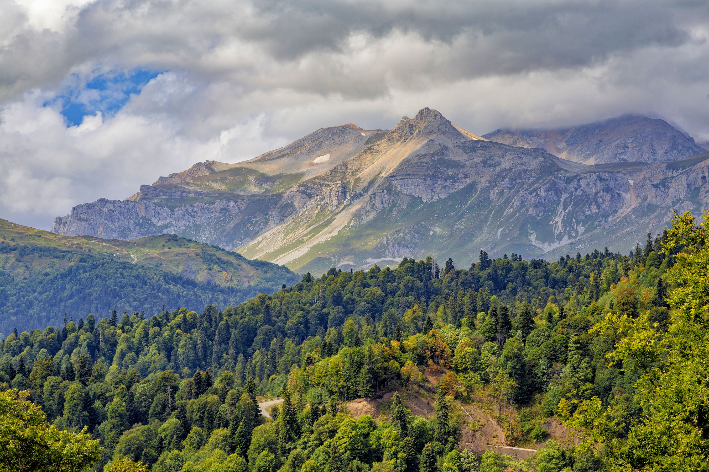
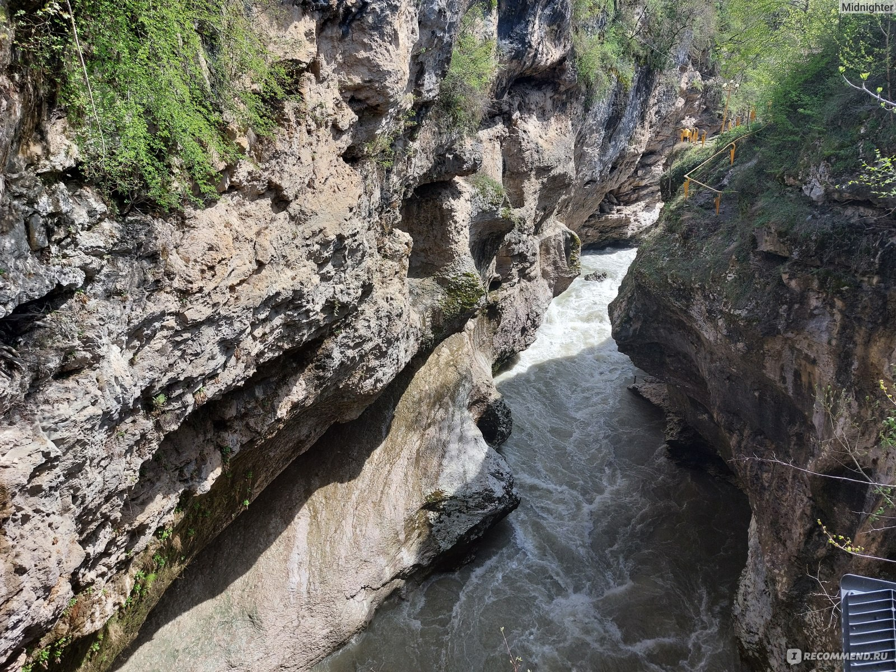

Общая картина
Проблемы Республики Адыгея
В Республике Адыгея существуют экологические проблемы, связанные с загрязнением атмосферного воздуха, водных ресурсов, деградацией почв и сокращением биологического разнообразия. Эти проблемы обусловлены антропогенной нагрузкой на экосистемы региона, включая развитие туризма, строительство инфраструктуры и промышленную деятельность.
Атмосферный воздух
- Источники загрязнения: выбросы от автотранспорта, предприятий жилищно-коммунального хозяйства, сельского хозяйства и промышленности.
- Накопление примесей: вредные вещества переносятся воздушными потоками, оседают на почве и в водоёмах, усиливая негативное воздействие на экосистемы.
- Локальные проблемы: высокая концентрация загрязняющих веществ отмечается в Майкопе и населённых пунктах вдоль дорог с интенсивным движением.

Водные ресурсы
- Загрязнение поверхностных вод: в реки поступают загрязняющие вещества с поверхностными стоками, включая минеральные удобрения, ядохимикаты и горюче-смазочные материалы.
- Заиливание рек: строительство на берегах и зарегулирование стока дамбами приводит к заболачиванию и трансформации рек в стоячие водоёмы.
- Качество воды: строительство Краснодарского водохранилища вызвало подъём грунтовых вод и ухудшение качества воды в колодцах.

Почвы
- Эрозия: на наклонных равнинах под воздействием воды легко разрушается плодородный слой почв, что затрагивает практически все пахотные земли.
- Химическое загрязнение: содержание тяжёлых металлов, пестицидов и других токсичных веществ превышает предельно допустимые концентрации.
- Деградация: слитизация и переувлажнение почв в зоне влияния Краснодарского водохранилища затрудняют их сельскохозяйственное использование.

Живые организмы
- Сокращение численности: уменьшается популяция медведя, серны, тура, а также пушных зверей — зайца, лисицы, енота.
- Редкие виды: в Красную книгу Республики Адыгея занесено 82 вида позвоночных животных, включая рыб, земноводных, пресмыкающихся и птиц.
- Утрата мест обитания: строительство инфраструктуры на охраняемых территориях приводит к трансформации уникальных экосистем.

.jpg)
.jpg)
.jpg)
.jpg)